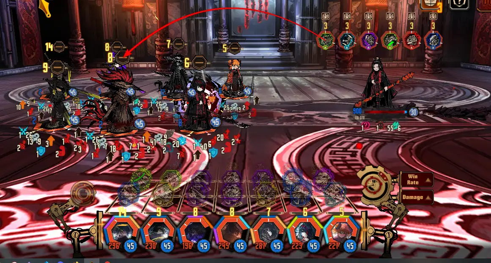
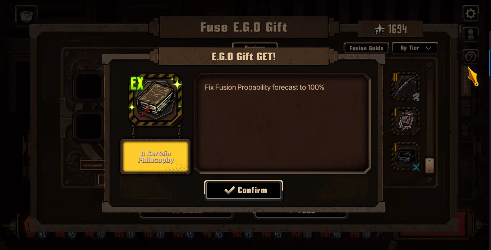
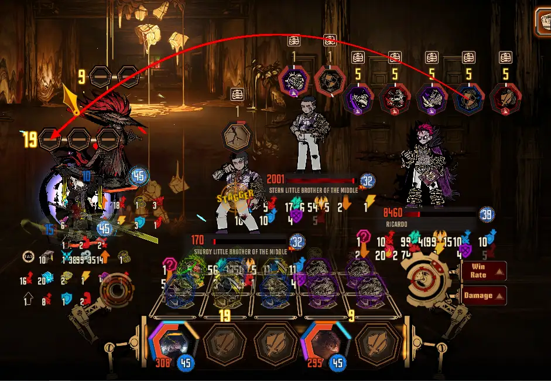
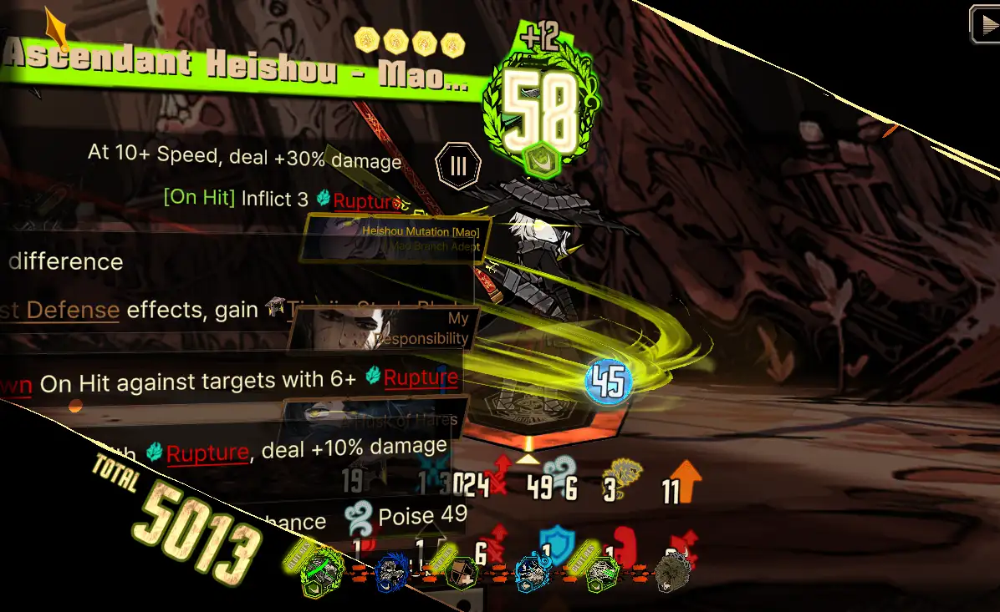
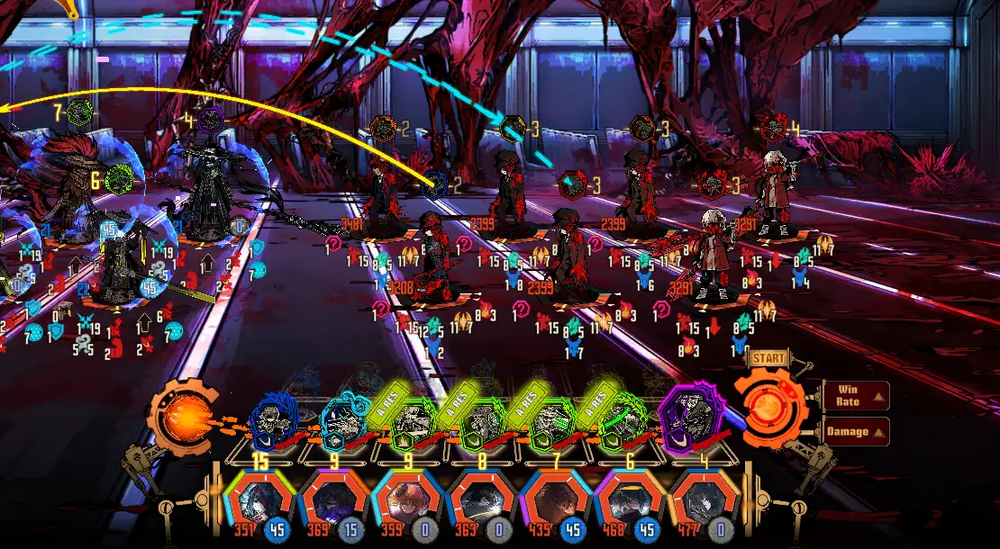
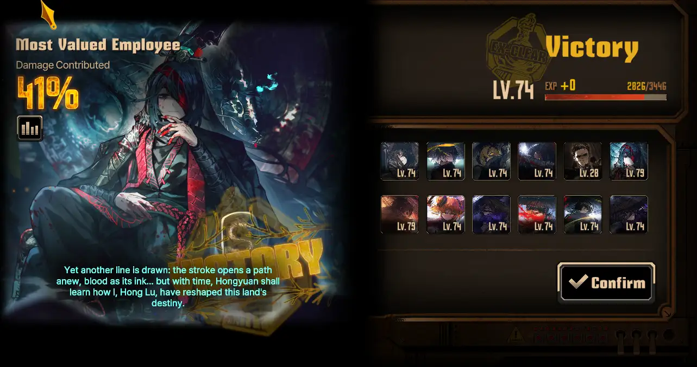
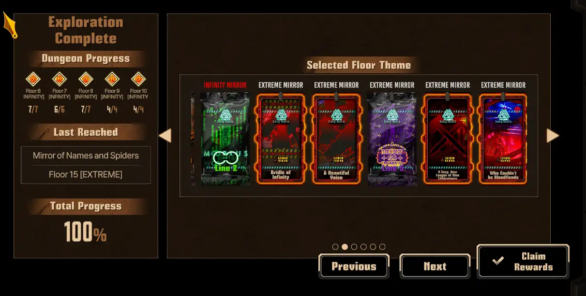

15.03.2026
Okay, I am finally in the right mindspace to play Mirror Dungeon, at what cost.. I started early morning, and finished 15 floors after 5 hours lmao.
This week I used Heishou team, because they're the one available. I would rather save Burn for times when I'm lazy and prefer to speedrun the whole thing. Not to mention, Mirror Projection reward is back, so let's use my current strongest team.
I'm at the point in the game where I can simply P+Enter while coding Discord page for the OCs.. The moment I see what's going on, they're fighting against Jia Qiu on floor 8?!

I start locking in once the team arrived on floor 11 a.k.a MD Extreme.
Strange fusion also occured beforehand:

THIS IS THE FIRST TIME I "FAIL" AND GET THIS E.G.O. GIFT?!
Thanks to this item, I collected necessary tier VI E.G.O gifts in almost every status. Of course I have built all Rupture fusion first, then I picked up "essentials": Clear Mirror, Artistic Sense, and Downpour. Why Tremor? you ask. Well, accompanied by Bio-venom Vial, Melty Eyeballs and Bell of Truth, they're pretty universal. ..Don't judge me, okay? Reading is not my strongest forte. I didn't craft Lunar Memory, because there's new "clear MDE without Lunar Memory" Achievement. Huh, Heishous are strong enough, why not. I also get Rusty Coin, Faith, Bridle, Unhatched Embers, slash gifts, and many more as nice addition.
One thing I don't usually do in MD run is changing every skill to S3, but I exchanged all Lord Hong Lu's skills. When playing with P+Enter, the game will choose his S1 or S2, due having more coins? Hence my thought process. Actually this is very helpful in MDE. The only reliable skill for clashing is Lord Hong Lu's..
I faced Ricardo and Middle henchmen at hidden boss node, floor 13. Entire team was wiped out so I think I need to give up and not proceed. I take a screenshot because "boo hoo hoo, only my fav guy and gal remained, how do you feel about that, darlings?"

Last hope, I use Morositas and Ira at Faust. Close call, they cleared the stage.
Fause became a hero again in floor 14, battle against Pequod Trio. Non-disclosure Agreement striked at the right moment, right person, and right foe. She finished Starbuck in single strike, cleanly.

I have seen more impressive number with Non-disclosure Agreement, such as Full Stop Heathcliff's 11k headshot damage against lasso horse? Still, in high floors where I can't clash in early turns, this is satisfying.
After that the run went smoothly (with few death here and here).. finally I arrived at floor 15! Remembering several failed attempts, I posted pack selection in Discord, kind-hearted Nanami suggested picking Bloodfiend one. Thank you Nanami! Initially I was skeptical, usually my Sinners are prone to dying because of Bleed. But for floor 15? It's doable.

This is normal first turn I swear...
That's it. Faust combusted out of somewhere near the end, but to my surprise, the battle was finished. Yay.

Lord Hong Lu deals 700 damage with sheer aura.

The "real fight" in Mirror Dungeon, previous floors are farming phase.